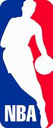
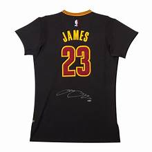
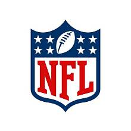
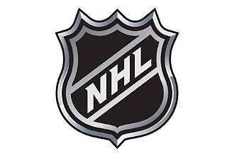
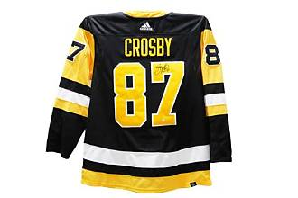

If you are interested in purchasing anything from my collection please reach out at email@addess.com!

Here you can find jerseys from famous NBA players, all up for sale.

This is my most prized piece which is priced at $13,500. This comes from one of the most famous athletes in the world during one of the most significant postseasons in NBA history.

All jerseys within this section are from famous NFL players.

I am looking to sell this jersey for $300. Kept in great condition and have had this piece for roughly 10 years!

Finally, the remaining jerseys are from famous NHL players.

I would like to sell this jersey for $1,200 as this piece is far more rare than most, other than my signed LeBron jersey. The condition is fairly new and has been framed for 12 years!